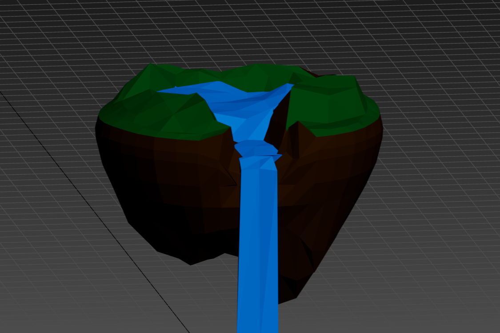
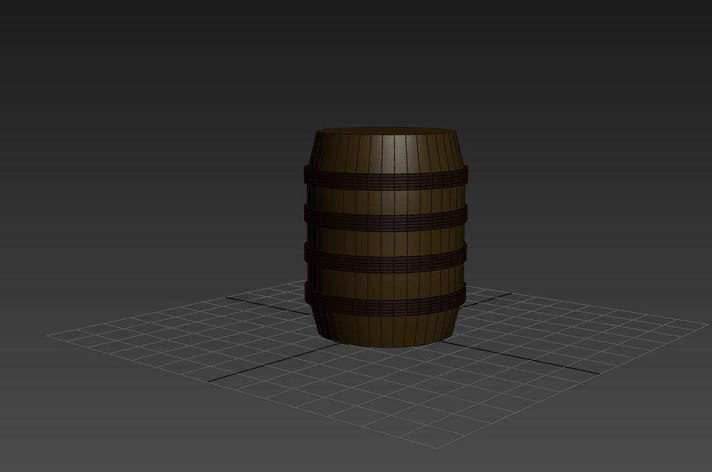
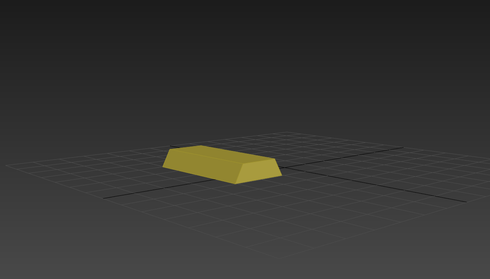
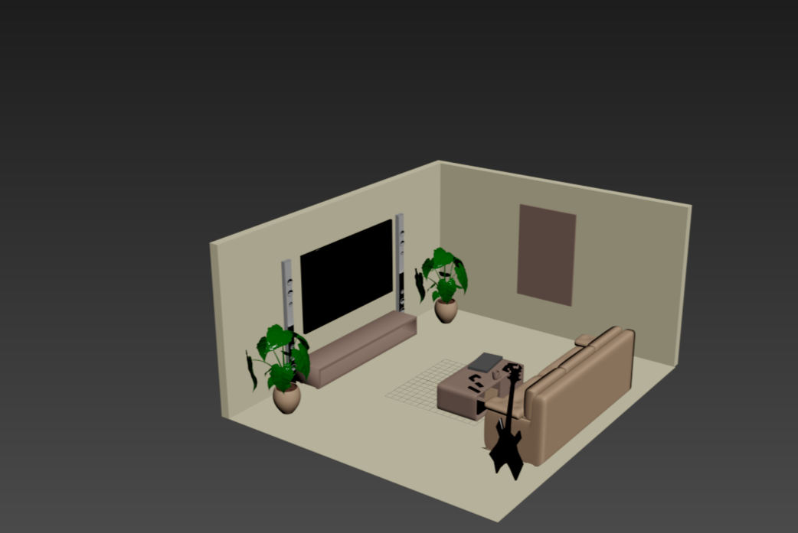

PROTO Visit
Visited the PROTO creative technology hub in Newcastle, where we met industry professionals and learned about real-world practices in digital media and immersive technology.
- Saw how PROTO runs projects
- Observed skills used in the workplace
- Learned about careers and company culture
Film Buddy
A collaborative music video project for an up-and-coming artist.
- Was lead editor for the first half of the project
- Edited and assembled raw footage into a structured music video
- Collaborated with the production team and artist to meet creative goals
Tools: Adobe Premiere Pro
Floating Island Model

3D island environment created to practise environmental design.
Barrel Prop

A detailed barrel prop created for game environments.
Gold Bar Prop

A realistic gold bar model created to practise materials and reflections.
Living Room Interior Visualisation

Realistic interior scene focusing on lighting, materials and composition.
Amazon Sales Revenue Data Visualisation
An interactive pie chart created using an Amazon sales dataset.
- Imported and cleaned CSV dataset
- Used Python to process data
- Created an interactive Plotly visualisation
Tools: Python, Pandas, Plotly